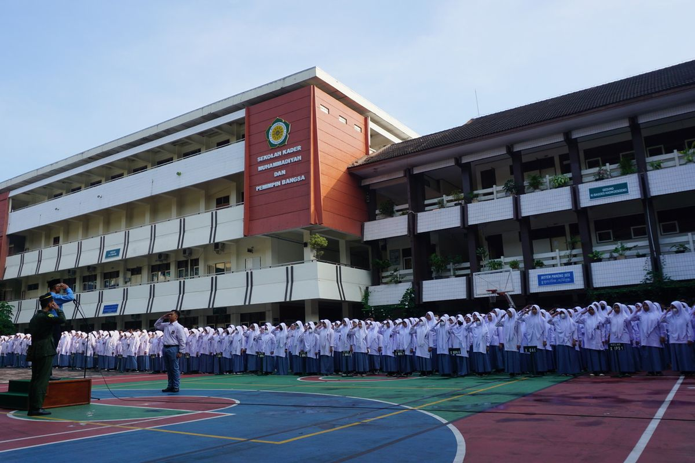

SMA MUHAMMADIYAH
Disiplin, Bersih dan Religius

SMA Muhammadiyah 1 Yogyakarta didirikan pada 1 Desember 1946 sebagai bagian dari upaya Muhammadiyah untuk memajukan pendidikan di Indonesia setelah masa penjajahan. Berlokasi di Kota Yogyakarta, sekolah ini awalnya beroperasi dengan fasilitas yang sederhana, namun seiring waktu, fasilitas tersebut terus berkembang untuk mendukung kegiatan belajar-mengajar yang lebih baik.Sekolah ini memiliki ciri khas dalam mengintegrasikan nilai-nilai Islam ke dalam kurikulum pendidikannya, menyeimbangkan pendidikan umum dengan pendidikan agama. Dengan fokus pada pembentukan karakter siswa, SMA Muhammadiyah 1 Yogyakarta telah melahirkan banyak alumni yang berkontribusi di berbagai bidang, baik di tingkat nasional maupun internasional. Dalam perkembangannya, sekolah ini dikenal sebagai salah satu institusi pendidikan unggulan di Yogyakarta. Di era modern, SMA Muhammadiyah 1 Yogyakarta terus berinovasi melalui penerapan teknologi dalam pembelajaran, peningkatan kualitas tenaga pendidik, serta perluasan jaringan kerjasama, baik di dalam maupun luar negeri. Hal ini menjadikannya sebagai simbol keberhasilan Muhammadiyah dalam dunia pendidikan di Indonesia.
Sambutan Kepala Sekolah
SMA MUHAMMADIYAH 1 YOGYAKARTA

- Drs.H.Herynugroho, M.Pd.
Assalamualaikum Wr. Wb. Pada era globalisasi dan pesatnya perkembangan teknologi informasi dan komunikasi sekarang ini, tidak dipungkiri bahwa keberadaan sebuah website untuk suatu sekolah, termasuk SMA Muhammadiyah 1 Yogyakarta sangatlah penting. Website ini dimaksudkan sebagai sarana untuk menginformasikan berbagai kegiatan sekolah yang bisa diketahui oleh masyarakat luas. Disamping itu, masyarakat juga dapat mengetahui profil, visi misi, data guru dan tenaga kependidikan, prestasi sekolah baik peserta didik maupun guru dan tenaga kependidikan, kegiatan ekstra kurikuler, sarana dan prasarana, penerimaan peserta didik baru serta informasi lainnya dari SMA Muhammadiyah 1 Yogyakarta. Disamping itu website sekolah juga dapat dijadikan sarana komunikasi antara sekolah dengan para alumni. Alumni dapat memanfaatkan website sekolah untuk konsolidasi, sehingga terbentuk ikatan alumni yang makin besar dan kuat. Sekolah menyadari bahwa alumni merupakan salah satu potensi yang apabila digali dan dikelola dengan baik dan benar akan mampu memberikan kontribusi yang sangat positif kepada sekolah. Oleh karena itu kami berharap, melalui website ini, Ikatan Keluarga alumni SMA Muhammadiyah 1 Yogyakarta akan semakin berkembang dan solid, sehingga dapat memberikan kontribusi untuk kemajuan sekolah tercinta Kami menyadari bahwa masih banyak kekurangan pada website SMA Muhammadiyah 1 Yogyakarta ini. Seiring dengan apa yang tengah kami lakukan, website ini akan kami terus kembangkan serta kami tingkatkan. Dengan ini, kami mengundang anda untuk dapat mengunjungi website SMA Muhammadiyah 1 Yogyakarta dari waktu ke waktu, untuk dapat mengetahui lebih lanjut tentang apa yang kami lakukan dan kami berikan kepada masyarakat, sesuai dengan visi kami terwujudnya lulusan yang berkarakter islami, berwawasan kebangsaan dan lingkungan, unggul, berkemajuan, serta berdaya saing global. Wassalamualaikum Wr. Wb.